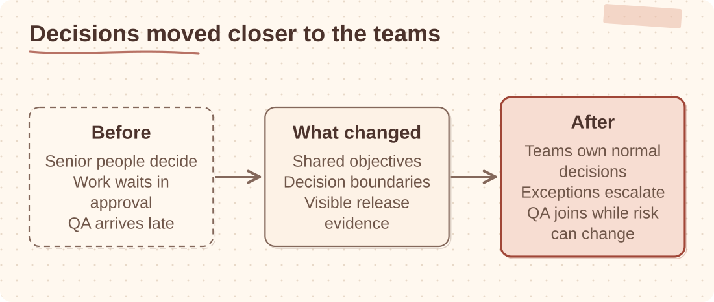

Leadership case study
Scaling Decentraland Engineering
What I changed when a small engineering group became several teams and too many decisions still depended on the same few people.
Org design / engineering management / QA leadership / career expectations / feedback loops / delivery quality
Problem
A small engineering team can run on proximity. People know who to ask, senior engineers fill the gaps and the leader can stay close enough to unblock most decisions. At that size, the lack of structure is often invisible.
As the group grew into several teams, those habits got expensive. Decisions kept coming back to the same few people, QA was treated as a gate at the end rather than part of owning the work, and new managers inherited teams without a clear operating model. Teams reported movement, but it was harder to tell whether we were getting better.
We had outgrown the informal way decisions were made. Adding more people without changing that would only have increased the load on the same senior engineers and managers.
Scope
Principles
Operating model
Before and after: who owns the decision?

Key decisions
| Decision | Why it mattered | Trade-off |
|---|---|---|
| Create clearer ownership areas | Made it clear who decides, who helps and who follows through. | Some boundaries felt artificial until people got used to them. |
| Build management capacity | Coaching, priorities and team health moved to the managers closest to the work instead of going through me. | Managers need context and trust; otherwise they become status collectors. |
| Create a part-time leadership rung when span of control actually broke | With 18+ engineers on two managers, senior engineers were already leading informally. An associate-manager role (majority IC, 2–3 reports) named the work that was already happening instead of forcing an IC-or-manager leap. | A new rung only works if it formalises real behaviour; launch comms said openly it may not fit every team. |
| Separate QA leadership from late validation | QA leads had a say in release risk, prevention and regression follow-up, not only in testing at the end. | QA needs enough authority to challenge release confidence, not only execute checks. |
| Use career expectations carefully | Engineers and managers got shared words for growth, impact and seniority. | Without real examples of behaviour, a ladder turns into bureaucracy. Ladders are not bingo cards. |
| Treat delivery frameworks as tools, not strategy | Shape Up helped by separating the problem from the implementation and giving small teams more ownership. | It only works when leaders still define what matters, kill weak bets and trust the team to choose the how. |
| Review outcomes, not only movement | Kept attention on reliability, delivery quality and product impact rather than activity. | Outcome signals are slower and sometimes uncomfortable. |
Results
- Named owners across client engineering, Creator Tools, SDK, QA and release delivery.
- Managers, QA leads and senior and staff engineers making decisions that used to come to me.
- Weekly production releases, about 75 public client builds a year and one 52-day run without a hotfix.
- Career and performance conversations based on written expectations instead of guesswork.
Lessons learned
- Growth exposed decisions we had previously made through proximity and habit.
- We got better results when we named the recurring failure before adding a process.
- A delivery framework helped organise work, but it could not replace trust or clear priorities.
- I knew the changes were working when familiar decisions stopped returning to the same people.